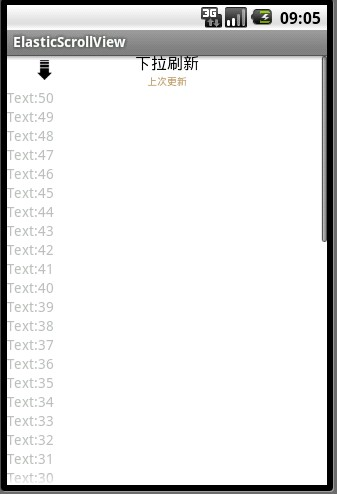
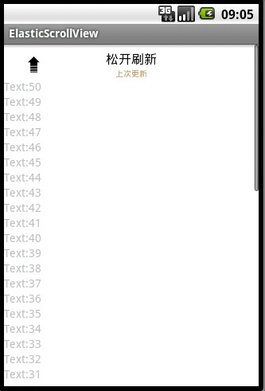
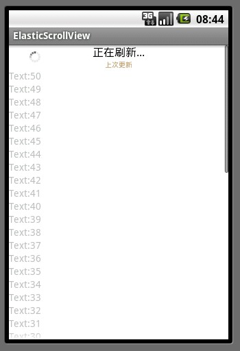

弹性Scrollview，可下拉刷新
网上看到了许多可以下拉刷新的listview，就像新浪微博那样的。但是却很少看到下拉刷新的Scrollview。有时候listview并不能解决问题，这时候就需要scrollview。于是我就自己做了一个弹性的scrollview，方法大同小异，重载onTouchEvent，并做处理。效果图如下：



下面分享一下代码
首先是下拉刷新头的文件布局
<?xml version="1.0" encoding="utf-8"?><!-- ListView的头部 -->
<LinearLayout xmlns:android="http://schemas.android.com/apk/res/android
android:layout_width="fill_parent
android:layout_height="wrap_content
android:background="FFFFFF" >
<!-- 内容 -->
<RelativeLayout
android:id="@+id/head_contentLayout
android:layout_width="fill_parent
android:layout_height="wrap_content
android:paddingLeft="30dp" >
<!-- 箭头图像、进度条 -->
<FrameLayout
android:layout_width="wrap_content
android:layout_height="wrap_content
android:layout_alignParentLeft="true
android:layout_centerVertical="true" >
<!-- 箭头 -->
<ImageView
android:id="@+id/head_arrowImageView
android:layout_width="wrap_content
android:layout_height="wrap_content
android:layout_gravity="center
android:src="@drawable/goicon" />
<!-- 进度条 -->
<ProgressBar
android:id="@+id/head_progressBar
style="@android:style/Widget.ProgressBar.Small.Inverse
android:layout_width="wrap_content
android:layout_height="wrap_content
android:layout_gravity="center
android:visibility="gone" />
</FrameLayout>
<!-- 提示、最近更新 -->
<LinearLayout
android:layout_width="wrap_content
android:layout_height="wrap_content
android:layout_centerHorizontal="true
android:gravity="center_horizontal
android:orientation="vertical" >
<!-- 提示 -->
<TextView
android:id="@+id/head_tipsTextView
android:layout_width="wrap_content
android:layout_height="wrap_content
android:text="下拉刷新
android:textColor="000000
android:textSize="16sp" />
<!-- 最近更新 -->
<TextView
android:id="@+id/head_lastUpdatedTextView
android:layout_width="wrap_content
android:layout_height="wrap_content
android:text="上次更新
android:textColor="b89766
android:textSize="10sp" />
</LinearLayout>
</RelativeLayout>
</LinearLayout>
接下来就是写一个类继承scrollview 并且添加上上面的下拉刷新头（headview），并重载onTouchEvent方法。
这个是下拉刷新头
思想是这样的：在自己写的ElasticScrollview（继承scrollview）中将下拉刷新头（headview）添到头顶，并设置headview的padding top为-headviewheight（它自己高度的负值），这样这个headview刚开始就看不见了。然后重载父类中的onTouchEvent方法，并设置headview的padding随着下拉不断变化，这样headview就显露出来了，随着不断下拉，状态在改变，headview的padding top在增大，这样看起来整个view就是有弹性的，当手指方开时（MotionEvent.ACTION_UP）再把padding设置回去，headview就又消失了。
我在ElasticScrollview中添加了一个innerLayout(这是一个LinearLayout)。 A ScrollView is a FrameLayout, meaning you should place one child in it containing the entire contents to scroll 这是官方文档里说 scrollview是一个单帧布局，所以你应该放一个子view来包含你所要滚动的所有内容。我这里已经在代码里加入了一个innerLayout了，所以你可以通过最后面的两个方法addChild(View child)和addChild(View child, int position)添加你想滚动的内容。
使用方法：
在布局文件中引用ElasticScrollview
<?xml version="1.0" encoding="utf-8"?><LinearLayout xmlns:android="http://schemas.android.com/apk/res/android
android:layout_width="fill_parent
android:layout_height="fill_parent
android:orientation="vertical" >
<com.ElasticScrollView.view.ElasticScrollView
android:id="@+id/scrollview1
android:layout_width="fill_parent
android:layout_height="fill_parent
android:background="FFFFFF" >
//这里不能再添加内容了，如果你想讲某个布局添加到ElasticScrollview中，可以再其他文件里布局 然后在代码里inflate出来 通过调用方法addChild(View child, int position)将它加入到滚动视图中
</com.ElasticScrollView.view.ElasticScrollView>
</LinearLayout>
在activity代码中
ElasticScrollView elasticscrollView = (ElasticScrollView) findViewById(R.id.scrollview1);// 注意要给ElasticScrollView setonRefreshListener 才能触发下拉刷新的事件。
elasticscrollView.setonRefreshListener(new OnRefreshListener() {
@Override
public void onRefresh() {
// 这里异步请求数据 可通过addChild(View child, 1) 将数据添加，position=1因为
// 0的位置被下拉刷新头占用了。代替 完成请求之后调用scrollView.onRefreshComplete();
}
});